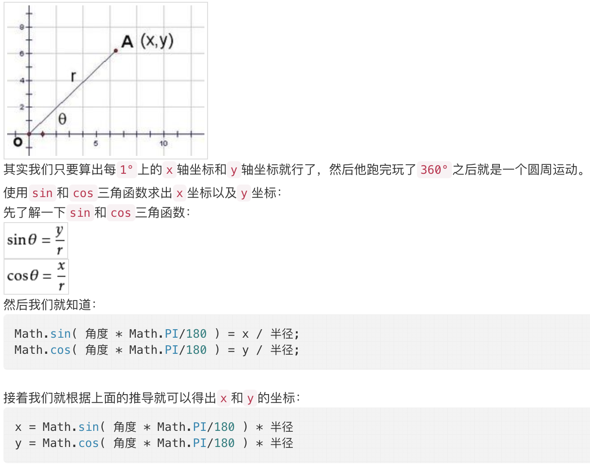

解决方案
Solution 1: js实现
HTML: 父元素和子元素，子元素做圆周运动
CSS: 父元素设置position为relative，作为子元素的定位依据；子元素设置absolute
JS: 设置计时器，随着时间变化，角度变化，转换为横纵变化，设置子元素对应的top和left值

<!-- HTML -->
<div class="rectangle">
<div class="ball">
</div>
/*CSS*/
.rectangle {
width: 200px;
height: 200px;
position: relative;
border: 1px solid black;
padding: 0;
margin: auto;
}
.ball {
width: 10px;
height: 10px;
border-radius: 50%;
position: absolute;
background-color: blue;
left: 50%; /*起始位置*/
top: 0;
}
//js
var rectangle = document.getElementById("rectangle1");
var ball = document.getElementById('ball1');
var centerX1 = (rectangle1.clientWidth - ball1.clientWidth)/2
var centerY1 = centerX1;
var radius1 = centerX1; //半径有要求是50px,修改此处即可
var angle1 = 0;
var timer = setInterval(function(){
angle1++; //可控制反方向移动
x = radius1 * Math.cos( angle1 * Math.PI / 180 );
y = radius1 * Math.sin( angle1 * Math.PI / 180 );
ball1.style.left = centerX1 + x + "px";
ball1.style.top = centerY1 + y + "px";
},30);
Solution 2: 仅CSS实现
HTML: 父元素和子元素，子元素做圆周运动
CSS: 借助transform和animation
<!-- HTML -->
<div class="rectangle">
<div class="ball">
</div>
/*CSS*/
@keyframes run { /*定义动画帧*/
from {
transform: rotate(0deg);
}
to {
transform: rotate(360deg);
}
}
.rectangle {
width: 200px;
height: 200px;
position: relative;
border: 1px solid black;
padding: 0;
margin: auto;
}
.ball {
width: 10px;
height: 10px;
border-radius: 50%;
position: absolute;
background-color: blue;
left: 50%; /*起始位置*/
top: 0;
transform-origin: 0 100px; /*相对于起始位置定义的圆心位置*/
animation: run 5s linear infinite; /*run为过渡动画，完成一次用时5s，匀速，无限循环*/
}